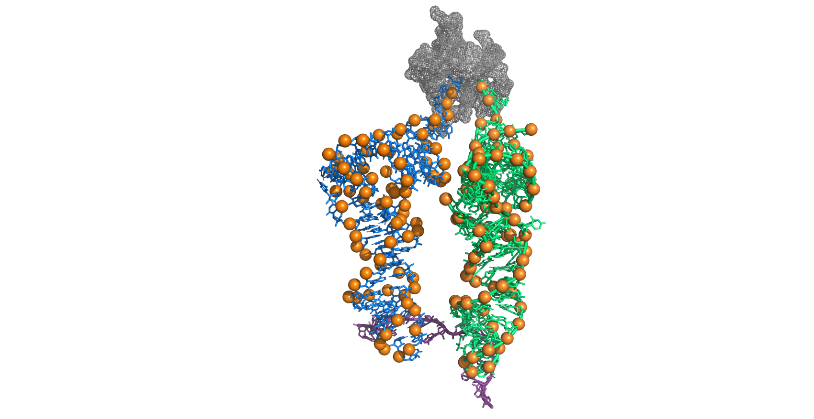

Home
Settings
Ribosomer
Ribo-Seq output
Protein levels
Ribosomer - TASEP modeling platform for mRNA translation simulations
Ribo-Seq Predictor

Home
Input data: mRNA sequences, tRNA abundance or rate table and ribosome resources settings
Ribosomer: TASEP modeling bench
Ribo-Seq occupancy maps predictions
Relative protein levels and translation efficiency (TE) predictions